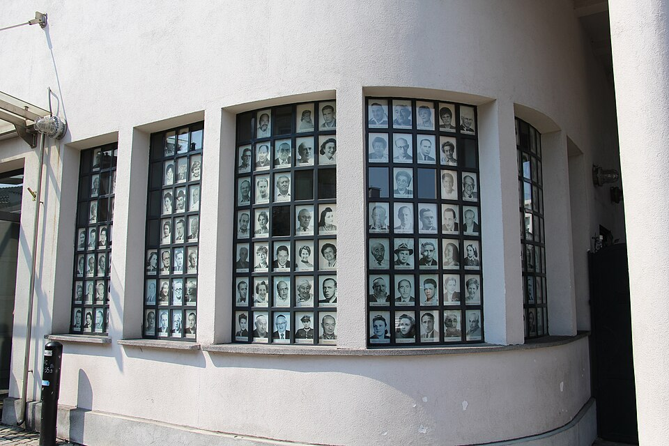
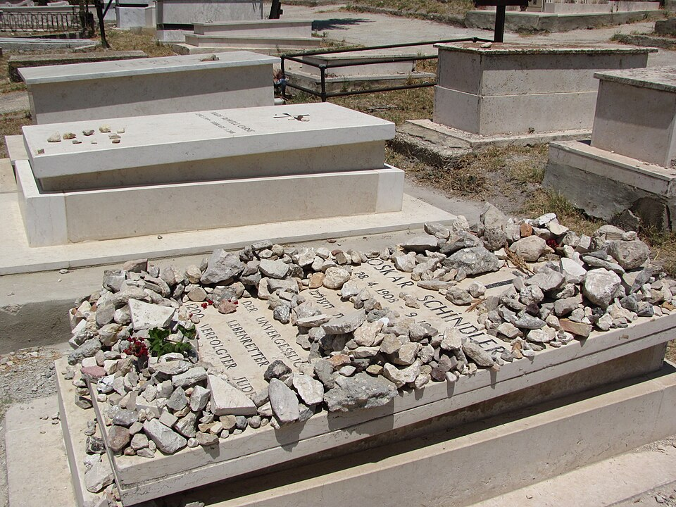
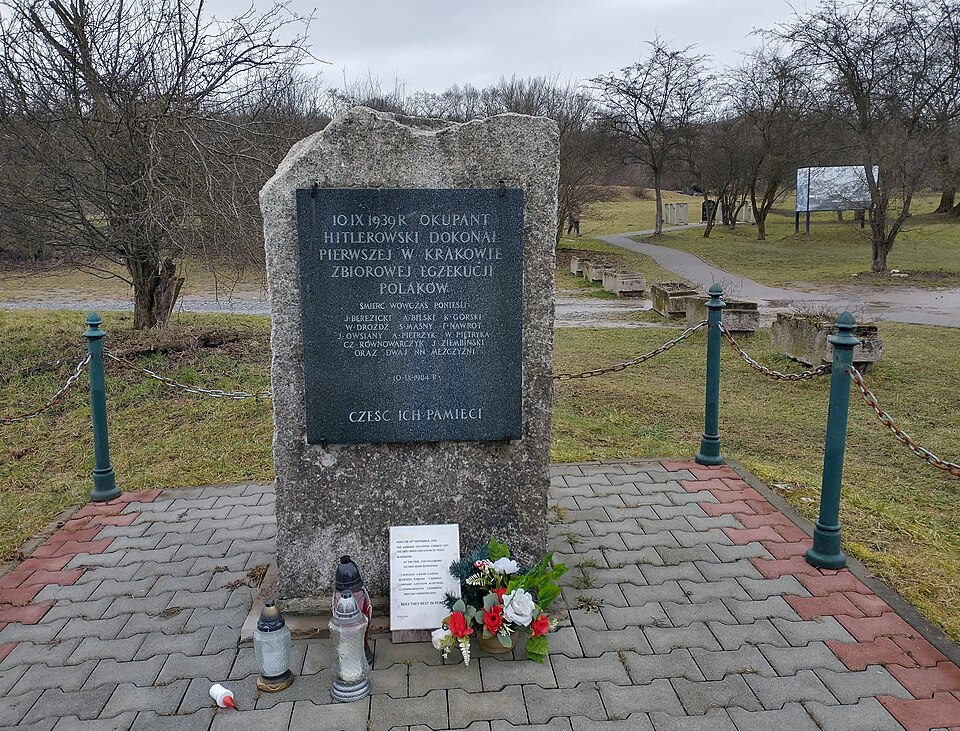

⏱️ 10초 카드 · 홀로코스트 (1908~1974)
쉰들러 리스트1,100여 명흠 있는 영웅의인
여는 질문 — '나쁜 편'에 속했던 사람도, 다르게 행동할 수 있을까?
이름
한국어오스카 쉰들러
원어Oskar Schindler
실제 발음오스카어 신틀러 (독일어)
로마자Oskar Schindler
영어권Oskar Schindler
별칭「쉰들러 리스트」의 실존 인물
왜 이 사람인가
전쟁 전엔 결코 영웅이 아니었던 사람 — 돈을 좇던 나치 당원이, 어느 순간 자기 전 재산을 쏟아 1,100여 명의 목숨을 살렸어요. '평범하고 흠 있는 사람'의 선택이 생명을 구할 수 있다는 걸 보여 주는, 그래서 더 울림이 큰 인물이에요.
생애
독일의 사업가이자 나치 당원이었어요. 처음엔 돈을 벌려고 유대인을 값싼 노동력으로 고용했지만, 점점 그들을 죽음에서 구하는 일에 자기 재산을 쏟아부었어요.
그는 자기 공장에 꼭 필요한 노동자라는 명단('쉰들러 리스트')을 만들어, 1,100여 명의 유대인을 수용소행에서 구해냈어요. 영화 「쉰들러 리스트」(1993)로 널리 알려졌지요.
전쟁 전엔 결코 영웅이 아니었던 사람이, 어느 순간 수많은 생명을 살렸어요. '나쁜 편'에 속했던 사람도 다르게 행동할 수 있다는 걸 보여줘요.
자료로 보기 — 유묵·사진



남긴 말
“여러분은 지금, 인간으로 집에 돌아갈지 살인자로 돌아갈지 선택할 수 있습니다.”
종전이 선포된 밤, 공장을 지키던 무장 경비병들에게 한 연설로 전해져요 — 마지막 순간까지 단 한 명도 죽이지 못하게 막은 말이죠. · 출처: 1945년 종전 연설(생존자 증언 정리)
“한 생명을 구한 자는, 온 세상을 구한 것이다.”
전쟁이 끝나자 그가 구한 노동자들이 금니를 녹여 반지를 만들어 그에게 주며 새긴 구절이에요(탈무드). · 출처: 노동자들이 그에게 준 반지에 새긴 글귀
연표
- 1908출생
- 1939~점령지 크라쿠프에서 공장 운영
- 1944~45'쉰들러 리스트'로 노동자 구출
- 1974사망 — 예루살렘에 안장
돈을 좇아 왔다가, 생명을 구하고 떠난 길
체코의 고향에서 점령지 공장으로, 그리고 끝내 예루살렘에 잠들기까지 — 한 사람의 방향이 바뀐 길이에요.
현재 지도 위 표시예요. 돈을 좇아 크라쿠프에 온 사람이, 마지막엔 그가 구한 사람들의 땅에 묻혔어요.
빛과 그림자그도 처음엔 이익을 좇았고 완벽한 사람은 아니었어요. 그래서 더, '평범하고 흠 있는 사람'의 선택이 생명을 살릴 수 있다는 게 울림을 줘요.
더 깊이 (고등·일반)
돈을 좇던 사업가
그는 독일의 사업가이자 나치 당원이었어요. 처음 점령지 크라쿠프에 온 것도 '값싼 노동력'으로 돈을 벌기 위해서였죠. 출발점은 영웅과 거리가 멀었어요.
에말리아 공장
그는 크라쿠프에 법랑 그릇 공장(에말리아)을 세우고 유대인을 고용했어요. 그런데 수용소의 참상을 가까이서 보면서, 그의 공장은 점점 '돈 버는 곳'에서 '사람을 숨기는 곳'으로 바뀌어 갔죠.
'쉰들러 리스트'
수용소가 폐쇄되고 노동자들이 죽음의 수용소로 보내질 위기에 처하자, 그는 '내 공장에 꼭 필요한 사람들'이라는 명단을 만들었어요. 그 명단에 이름을 올리는 것이 곧 사는 길이었죠 — 1,100여 명이 그렇게 살아남았어요.
전 재산을 쏟다
명단을 지키고 노동자들을 더 안전한 곳(브르넨에츠)으로 옮기기 위해, 그는 뇌물과 비용으로 모은 재산을 거의 다 써 버렸어요. 전쟁이 끝났을 때 그는 빈털터리였죠.
종전, 그리고 그 후
이스라엘은 그를 '열방의 의인(Righteous Among the Nations)'으로 기렸고, 그는 뜻에 따라 예루살렘에 묻혔어요. 영화 「쉰들러 리스트」(1993)로 그의 이야기는 온 세계가 알게 됐죠.
이 인물이 나오는 이야기
더 공부하기 — 여기서 출발하세요
📚 책으로
- 쉰들러 리스트 (Schindler's Ark) ↗ · 토머스 키닐리영화의 원작 소설 — 생존자 증언에 기반한 실화.
- 홀로코스트 — 유럽 유대인의 파괴 ↗이 비극의 전체 구조를 보는 책.
📜 1차 사료
- 오스카 쉰들러 (야드 바셈) ↗'열방의 의인'으로 그를 기리는 공식 자료.
🎬 영상으로
- 영화 예고편 — 쉰들러 리스트 (1993) ↗ · Universal Pictures (예고편)그의 실화를 옮긴 스필버그 영화의 공식 예고편.
📍 가 볼 곳
- 쉰들러 공장 박물관 (크라쿠프, 에말리아)그의 공장이 지금은 박물관이 됐어요.
- 오스카 쉰들러의 묘 (예루살렘 시온 산)그가 묻히길 원한 곳, 돌이 가득 쌓여 있어요.
- 야드 바셈 (예루살렘)'열방의 의인'을 기리는 홀로코스트 기념관.